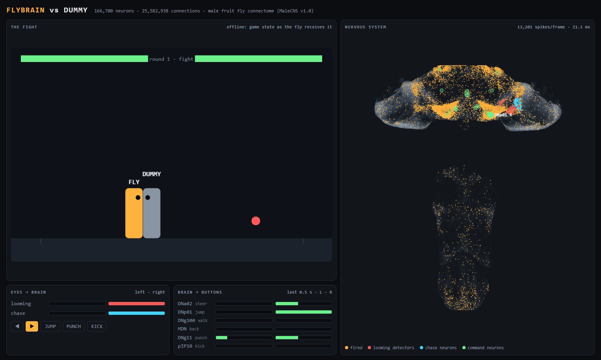

Open source · Drosophila melanogaster
A simulation of the complete central nervous system of an adult male fruit fly, wired exactly as electron microscopy found it in a real fly. There is no training and no learned policy inside the brain. Everything between input and output is the connectome.
Demo
The fight on the left, every neuron of the fly's nervous system on the right. Each dot flashes when its neuron fires.
How it works
You connect a task to the brain at a few neuron types known from the literature: one side for input (what the fly senses), one for output (the commands its brain sends to the body). The goal is a general-purpose "fly reservoir".
Anything the fly could sense. In SSH Fighter, the game state at 30 Hz.
Drives the fly's own sensory and feature-detector neurons, on the side where things are: LPLC2 (looming), LC4 (fast looming, escape), LPLC1 (small approaching objects) and LC10a (a moving target the male chases). A second route projects a 1-D panorama onto the 6,006 photoreceptors.
166,700 leaky integrate-and-fire neurons at 50 steps/s, from MaleCNS v1.0. Weights are synapse counts, negative for GABA, glutamate or histamine, normalized so each neuron's inputs sum to 1. The recipe follows Fly64. It runs multi-threaded on the CPU (numba) or on an NVIDIA GPU (CuPy).
The brain's 1,314 output cables to the body, including command neurons such as DNa02 (steering), DNp01 (the giant fiber, escape take-off), DNg100 (forward walking) and MDN (backward walking).
A hand-written decoder, or a trained linear readout on all descending neurons (reservoir computing). Nothing inside the brain changes.
What we found
These are small experiments, run on a desktop. They are not peer-reviewed science.
Tonic 0.18 and decay e−0.2 put every neuron's resting voltage at ≈ 1.0, exactly the firing threshold. The network ticks along by itself at about 4 Hz, and motor neurons fire at the same rate whatever the fly is shown.
Photoreceptors release inhibitory histamine onto lamina neurons, which in real flies use graded signals this model can't reproduce. In every setting tried, looming stimuli never reached the looming detectors.
Stimulating left LC4 + LPLC2 looming detectors:
+17 to +25 spikes/sin the left giant fiber DNp01, right side unchanged. Left LC10a raised the left DNa02 steering neuron by +1.4 to +3.7 spikes/s. Known looming → escape and pursuit → steering pathways, from the wiring alone.
Against a scripted dummy for 90 s, this share of its moves went toward the opponent, where chance is 50%:
64%This is the LC10a → DNa02 courtship-pursuit pathway. It still loses almost every match.
Finding 3 used tonic 0.14 and gain 3.0 over 6 noise seeds. None of the other readout neurons changed.
Applications
New applications go in their own folder and import the core (fly_brain,
fly_eyes) from the repository root.

The brain plays SSH Fighter, an online terminal fighting game, as a registered bot, with a live dashboard of every neuron firing and a trained punch readout.
It loses almost every match. It does chase its opponent, and the reason it chases turns out to be real fly biology.
Open sshfighter/ →Get started
Requires Python 3.12+ and about 1.5 GB of disk. Real time needs a brain step under 20 ms: about 9 ms on a 24-thread CPU, or 1.4 ms on an RTX 4060 laptop GPU.
python -m venv .venv
# Windows: .venv\Scripts\activate macOS/Linux: source .venv/bin/activate
pip install -r requirements.txt
python build_brain.py # downloads MaleCNS v1.0 (~1.1 GB) to ~/fly-data and builds the network
# optional, NVIDIA GPU: then set FLY_DEVICE=cuda
pip install -r requirements-gpu.txtThere are no trained weights to download: the "model" is the fly's wiring diagram. Expect exactly
166,700 neurons and 25,582,938 connections. Set FLY_DATA=/some/path to store the data elsewhere.
# watch it play against a fake opponent, dashboard at http://127.0.0.1:8777
python sshfighter/fly_fighter.py --offline --seconds 120 --dashboardPrefer a notebook? A quickstart lives at
notebooks/quickstart.ipynb.
Credits
If you use the connectome data, cite Berg, S. et al. (2026), Cell, and follow the MaleCNS attribution terms.